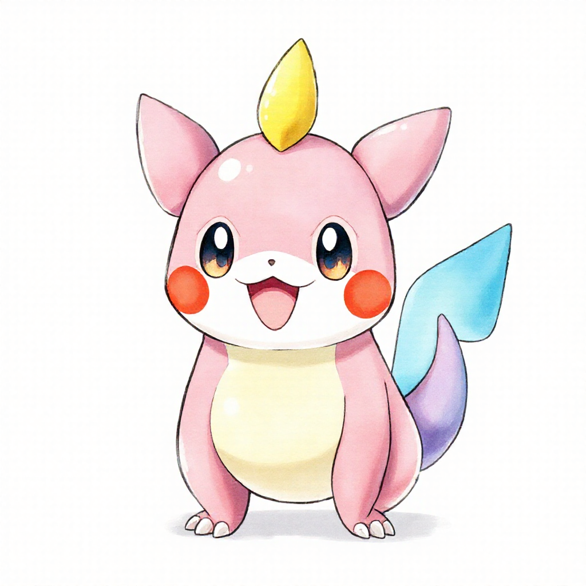
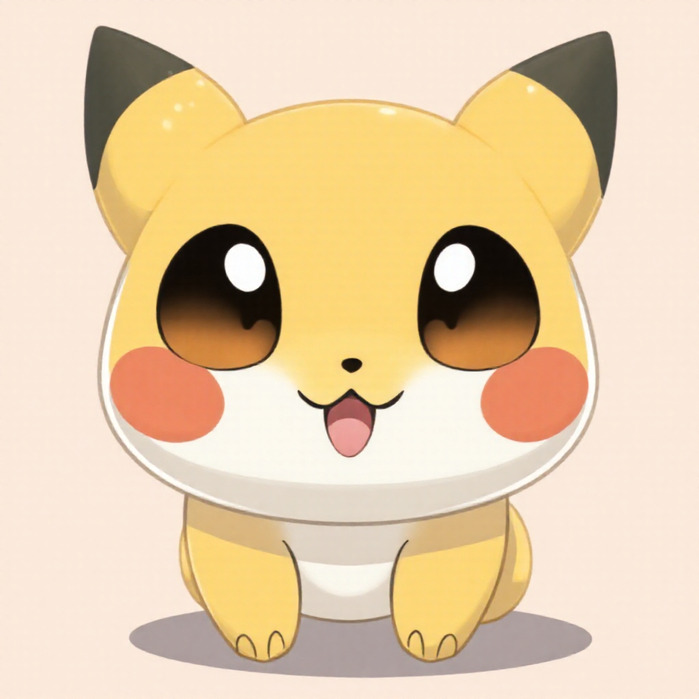
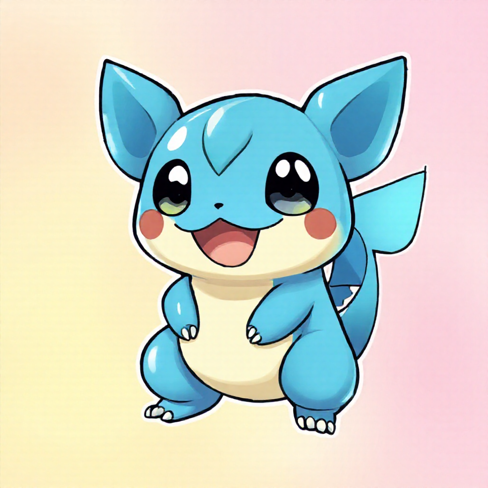

Sugimori Official Art Style

Style:
Ken Sugimori art style, official Pokemon artwork, hand-drawn illustration, soft watercolor, vibrant colors, friendly cute character, frontal view, clean white background
Notes:
Official Pokemon artist style - classic watercolor look
Pokemon Anime Style

Style:
Pokemon anime style, hand-painted cel animation, soft rounded shapes, big expressive eyes, cute and friendly, frontal portrait, pastel colors, wholesome aesthetic
Notes:
Inspired by the Pokemon TV show - soft, rounded, friendly
Pokemon Trading Card Style

Style:
Pokemon trading card illustration, hand-drawn digital art, glossy finish, vibrant saturated colors, cute character design, centered composition, professional game art
Notes:
Trading card game aesthetic - vibrant, professional, glossy
Results Summary
✓ Successfully generated 3 Pokemon hand-drawn style variations
All focus on: cute, hand-drawn aesthetic, frontal view, friendly characters